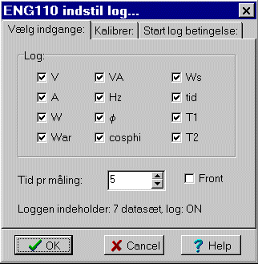
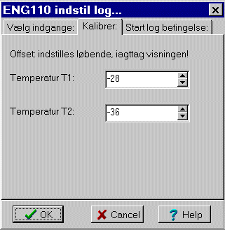
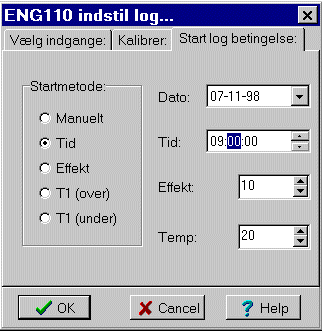

Kommunikation med mere, versioner
Menu i Datalyse
Elastisk stød og uelastisk stød, se stødforsøg menu
Frekvens på indgang A
Passagetid på indgang A
Omløbstid på indgang A
Svingningstid på indgang A
Start A, stop B
Løb + passagetid (accelerationsmålinger)
Impulstælling i tabel
Impulstælling grafisk
Halveringstid
Halveringstykkelse
GM plateau, spændingskarakteristik
Ikke alle CNT150s funktioner udnyttes i Datalyse, modsat tilføjer Datalyse ny funktionalitet til tælleren! Denne sætning virker måske lidt kryptisk, men det er meget naturligt. CNT150 kan benyttes uden pc, idet den kan styres vha. nogle trykknapper, men ikke alle de hertil hørende funktioner er der brug for, når apparatet styres fra pc'en.
Når der er menupunkter både til impulstælling og til tælling med GM-rør, skyldes det, at tælleren har indgang til impulstælling på fronten og indgang til GM-rør på bagsiden. CNT150 har kun et interval på 10 sekunder til kontinuerte tællinger, men i Datalyse kombineres disse til 10 s, 20 s, 30 s 60s, 120 s. Det betyder ikke noget at tællerens display stopper efter hver 10 sekunder i 5 sekunder.
Flere af menupunkterne i Datalyse indeholder omfattende beregninger på de målte data. Det gør det let at benytte tælleren til eksperimenter. Det gælder især stødforsøgene.
Menu i Datalyse
Multitabel
Opsætning af indgange og udgange...
Læs log, loggen læses og skrives i tabellen.
Slet log.
Dataloggeren har:
Desuden har apparatet en datalog på 1948 bytes. Da hver måleværdi fylder to bytes, kan der således logges i alt 974 værdier. Logges f.eks. 2 spændinger og 1 temperatur bliver det til 1948/6 = 324 datasæt. Loggetiden kan indstilles i hele sekunder fra 1s til 1800 s.
Når apparatet er tilsluttet en pc, logges Online, dvs. data i apparatets log berøres ikke. Når apparatet skal benyttes i marken, forbinder man først apparatet til en pc og indstiller loggetid, vælger aktive indgange og relæer. Så slukkes for apparat og pc og man går i marken med apparatet Vel hjemkommet, kan data overføres til pc.
Menu i Datalyse:
Grafisk måling
Vis måling
Opsætning...
Demomultimeter fra M+S med følgende funktioner: multimeter, termometer, pH-meter og fjerndisplay.
Fjerndisplay (remote display) kan indstilles til:
Tilfælde 1: Slave. Det er muligt at skrive til DM450s display. Endnu ikke implementeret i Datalyse.
Tilfælde 2: Specielt instrument er af særlig interesse i Datalyse i det tilfælde, hvor der måles på spændingen fra fx en Vernier-sonde. Det kan fx være en Force-sensor. Sonden sættes fx i en batteribox (2515.60 fra SF) og DM450 indstilles til at måle spænding Vdc, max 4 volt eller max 40 volt.
Ved indstilling af Mål (t, f(t)) i Datalyse vælges sonde og Send Værdi til DM450. Herefter indstilles DM450 til Remote Display.
Under målingerne vil Datalyse vise den korrekte kraft både på skærmen og på apparatet.
Tilfælde 3, 4 og 5: Vha. det medfølgende krydsstik og det serie kabel til DM450 forbindes fx et andet elcanic instrument til DM450. I denne indstilling kan DM450 kun benyttes som fjerndisplay. Det kan ikke samtidigt tilsluttes en pc, da der kun er et serielt stik på apparatet.
Menu i Datalyse
Grafisk måling
Vis måling
Multitabel, der måles en række parametre, se nedenfor.
Oversigt, viser alle målte parametre.
Vis, undermenu til at skifte visning af parameter.
Indstil log
Læs log, loggen læses til tabellen i Datalyse.
Start / Stop log
Nulstil energi
Nulstil tid
Energimetret måler effekt og energiforbrug. Samtidig kan det måle to temperaturer. Funktionstasterne »up« og »ned« skifter visning mellem:
Ved grafisk måling måles én af ovenstående parameter. Ved multitabel i Datalyse, har jeg valgt at se bort fra størrelser skrevet med kursiv i listen ovenfor. Ønsker man at tegne flere grafer i samme koordinatsystem, skal man vælge multitabel, og efter endt måling vælge graf i tabellen. Her kan afmærkes indtil 10 y-værdier til samme graf.
I version 2.0 er tilføjet:
Loggen kan indeholde ca 31 kB. Antallet af datasæt afhænger derfor at, hvor mange parametre, der logges.
Indgange:

På billedet ovenfor, har jeg placeret funktionerne på samme måde som på apparatet. Men fasevinklen, j dækker over to parametre: j og cos(j).
Hvert datasæt består af et tidsstempel og fra 0 til 13 parametre. Det er selvfølgelig meningsløst at logge 0 parametre, idet så kun tidsstemplet logges.
Logges alle parametre, kan loggen indeholde 534 datasæt, loggen kun én parameter, kan loggen indeholde 3100 datasæt.
Tid pr måling kan vælges fra 1 sekund til 3600 sekunder.'
Kalibrer termosonder:

På dette faneblad, kan man indstille offset på de to temperaturindgange. Tallene kan variere fra -100 til 100. Scroll langsomt op og ned vha. pilene, indtil energimetret viser den ønskede temperatur.
Bemærk, at indstillingen er momentan på dette faneblad, mens den på første faneblad først foretages, når OK vælges.
Start logbetingelse:

Her kan forskellige betingelser for start af log vælges:
| Startmetode | der startes når: |
| Manuelt | Start/stop på apparat eller i menuen i Datalyse |
| Tid | intern tid overskrider valgt tid |
| Effekt | effektforbruget overskrider valgt effekt |
| T1 over | temperaturen på indgang 1 er over valgt temperatur |
| T1 under | temperaturen på indgang 1 er under valgt temperatur |
Betingelserne indstilles fra Datalyse og huskes naturligvis, når apparatet slukkes.
Menu i Datalyse:
Grafisk måling
Vis måling
Indstil parametre
Sweep: måling af mikrofonsignal, som funktion af frekvens.
Tonegeneratoren er meget velegnet til forsøg med lyd.
FNG120 har to indstillinger:
En normal indstilling med frekvenser fra 0-130 kHz, hvor kurveformen kan være sinus, firkant eller positiv firkant.
En speciel indstilling (blå farve) med frekvenser fra 0.10 til 20.00 Hz, hvor kurveformen kan være sinus eller trekant.
Sweep:
Steppet kan indstilles til 1-10 kHz med en opløsning på 1 Hz og tidssteppet kan indstilles til 0.05 - 5.00 s.
Når FNg120 foretager et sweep, sendes sammenhørende værdier af frekvens og mikrofonsignal løbende til pc'en.
Menu i Datalyse:
Mål (t, pH)
Vis måling
Multitabel mål pH og temperatur.
Indstil parametre
pHTM105 sender hele tiden data til pc'en (ca. to gange i sekundet).
I menuen Indstil parametre vælges:
Visning på pH-metrets display:
pH, t/°C eller T/K.
pH-kompensering
- Omgivelser: temperaturen måles internt i metret.
- K-sonder: temperaturen måles med en K-sonde.
- Fast temperatur: temperaturen indtastes.
Fast temperatur kan kun vælges i denne menu. De andre indstillinger kan vælges ved at trykke på knapperne på apparatets front.
pH-metret kalibreres vha. to parametre: asymmetrispændingen og Nernsthældningen.
Asymmetrispændingen:
Fejlspænding fra pH-glaselektroden. Ideelt vil pH-glaselektroden afgive 0 mV ved 7 pH. Fejlen bortjusteres vha. knapperne »Buffer adj.« på pHTM105's front.
Nernst-hældning:
pH-glaselektrodens relative stejlhed justeres i denne menu således:
- metret indstilles til at vise pH og pH-glaselektroden placeres i en buffer med pH = 7.
- Når visningen er stabil justeres indstillingen vha. Buffer adj. til metret viser pH = 7.
- Herefter placeres elektroden i en anden buffer fx pH = 4 og Nernst hældningen justeres indtil metret viser pH = 4.00.
Den viste Nernst-hældning overføres til metret og gemmes.
Temperatur offset:
Hvis termosonden ikke viser korrekt temperatur, kan offset indstilles her. Indstillingen overføres til metret og gemmes.
Menu i Datalyse:
Grafisk måling
Vis måling
Multitabel, der måles tryk og temperatur.
Kalibrering
PTM100 sender hele tiden data til pc'en (ca. to gange i sekundet).
Tryk kan vises i PTM100's display i området 0 til 200 kPa. Ved 200 kPa skifter displayet til - - - - , men værdier lidt større end 200 kPa sendes korrekt til pc'en.
Temperaturer skal ifølge Elcanic ligge mellem 0 og 250 °C, men displayet kan godt vise negative temperaturer og disse kan også godt måles fra pc'en.
Man kan således godt lave forsøg med en kuldeblanding.
Slangens indre diameter er 3 mm og dens længde er ca. 120 cm.
ps: se øvelsesvejledninger.
Menu i Datalyse:
Halveringstykkelse, pladetykkelse kan indtastes før hver måling.
Halveringstid (og andre tidsafhængige målinger).
Poissonfordeling
Version 1.02 mangler en kommando for at sende data fra apparat til pc, derfor man ikke benytte måletiderne 1 sekund og uendelig til dataopsamling.
RM400 er forsynet med en hukommelse, der kan indeholde 60 målinger. Hukommelsen kan ikke benyttes i forbindelse med dataopsamling.
Version 1.03
Når måling stoppes i uendelig tid, sendes en måling til pc'en.
I automode kan måles i alle faste tider. Ved måling i 1 sekund vises hver 5. måling i RM400's display og alle målinger sendes til pc'en.
Baudrate 9600, ingen paritet, 1 stop, 8 databit. Alle apparaterne har kommando for version. Kablet er hun i begge ender, men ellers et standardkabel. Data sendes pakket. Man kan derfor ikke benytte terminalprogrammet i Datalyse til dataopsamling!
Elcanic, Gørtlervej 3, 5750 Ringe. www.elcanic.dk
CNT150 opdateret til version 2.01 den 23/12 2002
DM450 opdateret til version 2.00 den 17/10 2002
FNG120 opdateret til version 1.21 den 17/10 2002
PHTM105 opdateret til version 2.02 den 30/11 2002
PTM100 opdateret til version 1.03 den 17/10 2002